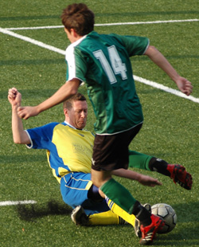
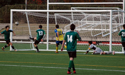
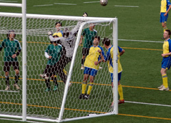

|
Hodogaya, Saturday 1st December,
The Hibs went into this one expecting a tough one from the Geckoes, and flattering scoreline aside, we got one. They dominated our midfield and stretched our defense all match, but were repeatedly caught by our counterattacks, especially as the game wore on.
Hotogoya Park is now a beautiful, spanking-new artificial pitch, our first nice ground of the year. With Misato lurking next week, in the first half we tried to take advantage and work short passes at every opportunity, but were repeatedly picked off by the hard-charging Gecks. They created several chances, especially their right winger, and it was a busy half for the back four. With some help from Hitoshi in goal we handled the pressure well, and were able to catch them on quick outlets upfield.
Eventually a defender chopped down one of ours on the right side to stop a counterattack, and Mike calmly stepped up and drilled the 25-yard free kick to the keeper's left, 1-0 Hibs. The lizards kept the pressure up and we kept catching them on the counter, some tight moments for both sides but no more scoring into the half.
The Geckoes' frenetic pace began to slow in the second half, giving us more time on the ball. Mike and Andre worked a nice series of passes on the left that put Dre in with one man to beat, he cut inside and finished strongly, 2-0 Hibs. Then we had a flurry of goals - Tomo scored from a cheeky corner, Naoki picked out Andre with a perfect free kick, which Dre turned and one-timed into the net, and then Tomo perfectly brought down a 50-yard clearance, dribbled to the corner, played to Yasu, got it back and fired it across to the red-hot Andre, who scored from close range, 5-0 Hibs with about 20 minutes to go.
At this point I figured we could coast it out until the whistle, but the reptiles were having none of that and began to dominate us all over the pitch. They poured forward in numbers and forced us into several saves, including another beauty from Hitoshi, then finally got a deserved goal on a long cross which was juggled around in the box and nodded home by one of their big midfielders, 5-1. They kept coming and were unlucky not to score again, hitting the post twice.
Mike then ended the barrage, turning midfield to knock a ball straight onto Andre's feet from about 30-yards, Dre finished calmly (for him) for the last of the game, 6-1 Hibs. We earned the win, though probably not by such a large margin, a hard-fought game and much respect to the Geckoes who just kept on coming.
Report by Jay Alabaster
|